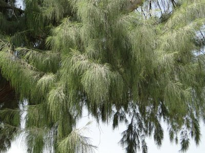

الأثل (الطرفاء)Athl (Tamarisk)
Tamarix aphylla
مستوطنةNative
تنتمي الطرفاء إلى الفصيلة الطرفاوية (Tamaricaceae)، وهي شجرة ملحية (Halophyte) بامتياز. تمتلك تكيفات فسيولوجية فريدة، حيث توجد غدد ملحية على أوراقها تفرز الأملاح الزائدة، مما يسمح لها بالنمو في تربة لا تصلح لغيرها. بيئياً، تعمل الطرفاء كمصدات رياح طبيعية في الهضبة الغربية والمناطق الصحراوية، مما يقلل من سرعة الرياح السطحية ويحد من حركة الرمال. للأسف، تُعامل هذه الشجرة في بعض المناطق كمجرد "عائق" أمام المشاريع الصناعية والتنقيبية، مما يؤدي إلى تجريف واسع لأحزمة الحماية الطبيعية التي كانت تشكل حاجزاً حيوياً ضد العواصف الغبارية.
Athl belongs to the tamarisk family (Tamaricaceae) and is a true halophyte. It possesses unique physiological adaptations, with salt glands on its leaves that excrete excess salts, allowing it to grow in soils unsuitable for other species. Ecologically, Athl functions as a natural windbreak across the Western Plateau and desert regions, reducing surface wind speed and limiting sand movement. Unfortunately, in some areas this tree is treated merely as an "obstacle" to industrial and drilling projects, leading to widespread clearing of the natural protective belts that once formed a vital barrier against dust storms.